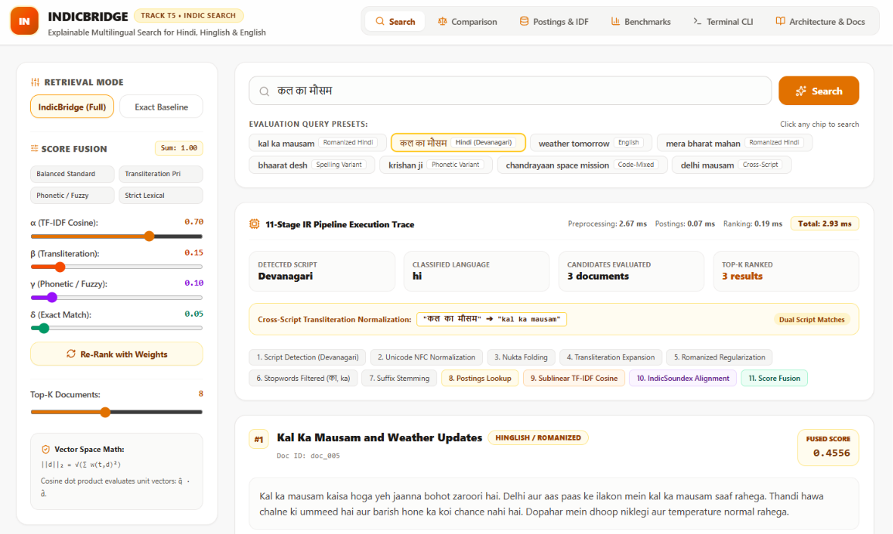

Project Overview
IndicBridge is a multilingual Information Retrieval system developed to support search across Hindi, English, and Romanized Hindi (Hinglish).
The system addresses differences in scripts, spelling variations, and phonetic similarities that can make multilingual search difficult. It combines traditional information retrieval techniques with linguistic preprocessing and cross-script matching.
Application Preview

The Problem
Users may express the same Hindi word using Devanagari script or Romanized Hindi. Different spellings and transliteration variations can prevent conventional exact-token search systems from finding relevant results.
The challenge was to improve retrieval across these variations while maintaining explainable and meaningful relevance ranking.
Our Approach
IndicBridge combines multiple information retrieval techniques to improve multilingual search.
- Inverted Index: Organizes document terms to support efficient retrieval.
- TF-IDF: Represents term importance and contributes to relevance-based document ranking.
- Unicode Normalization: Standardizes text representations before retrieval.
- Cross-Script Processing: Supports matching across Devanagari and Romanized Hindi representations.
- Phonetic Matching: Uses IndicSoundex to help identify acoustically similar Indic consonant representations.
- Explainable Ranking: Combines retrieval signals to make relevance ranking easier to interpret.
My Contribution
I contributed to the linguistic preprocessing component of IndicBridge, focusing on standardizing Indic text and improving phonetic matching for Romanized Hindi queries.
Linguistic Preprocessing
- Implemented Unicode NFC normalization to standardize text representations.
- Worked on Devanagari nukta folding to handle representation variations.
- Developed Hindi and Hinglish stopword lists to remove low-information terms during preprocessing.
IndicSoundex Algorithm
Developed a custom seven-group phonetic algorithm called IndicSoundex. It groups selected acoustically similar Indic consonants to support phonetic matching across spelling variations in Romanized Hindi.
This component helps the retrieval system identify potentially related terms even when users enter different Romanized spellings.
Evaluation & Results
The project evaluated the proposed retrieval approach against an exact-token TF-IDF baseline using 24 judged queries.
The team's reported evaluation showed:
- A 7.38% relative improvement in Mean Average Precision (MAP).
- A 9.68% relative improvement in Recall@10.
- A small decrease in Precision@5, highlighting a trade-off between retrieving more relevant documents and maintaining precision in the top results.
These results are the team's reported benchmark measurements for the project evaluation.
Future Improvements
Potential improvements include expanding linguistic coverage, refining transliteration and phonetic matching, increasing evaluation coverage, and testing the system with larger and more diverse multilingual datasets.